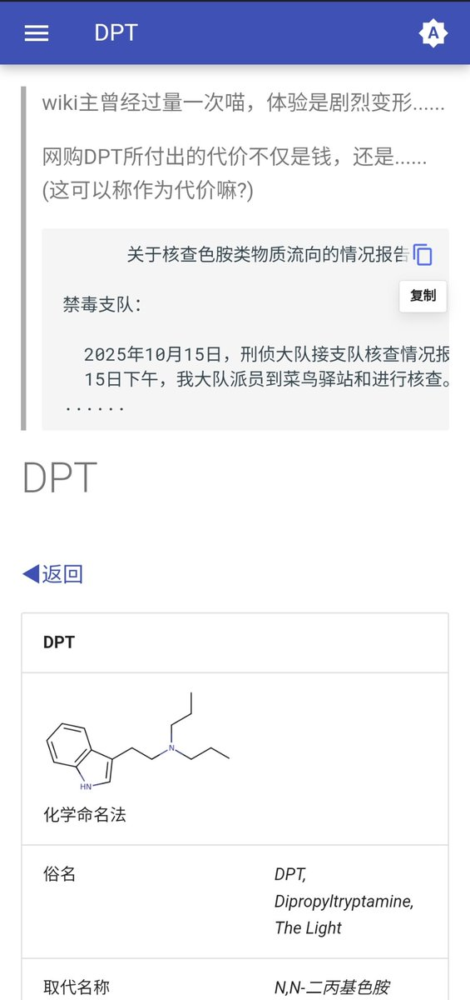

Rinko
@Rinko_zero8964
何意味……我不知道这个是从哪里来的东西，但是他以前一直声称自己是“顺男”，。这让我觉得很恶心，披着皮上女性，皮下却连enby都不是，纯纯的国男，。。。

鼠尾草～🌿
@SalviaSWC
Mercy是真的pass阿，连晶哥在调取ta收DPT快递的监控的时候都认为ta是“女子”......😥
“
关于核查色胺类物质流向的情况报告
禁毒支队：
......疑似有色胺类违禁药品。
......经调取驿站内部视频发现：2025年9月4日16时27分，一女子取走该邮件。后经天网追踪、人脸识别，查明该女子叫......
” https://t.co/qnMdJQLoKk